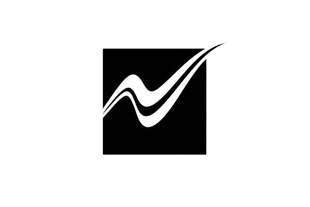
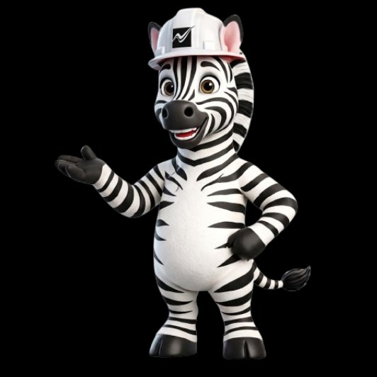

A plataforma que organiza atendimento, equipe, obras e prazos para escritórios de arquitetura e engenharia.
Pensado para operação real, não só atendimento · Celular e desktop · Adaptável ao fluxo do escritório
ZIRA AI, plataforma para arquitetura e engenharia. Mais de 100 escritórios já evoluíram para uma operação mais clara, integrada e previsível.
Zira AI
No WhatsApp, o Zira identifica a solicitação, separa oportunidades comerciais de outros assuntos, prioriza o que exige atenção do time e organiza o contexto para que cada atendimento avance com mais clareza. Quando a resposta não deve ser automatizada, o sistema encaminha o caso corretamente, sem ruído e sem improviso.

O problema não está só em captar clientes. Está em perder controle da operação.
Quando tudo depende de mensagens soltas, memória e urgência improvisada, o escritório perde contexto, a equipe reage em vez de conduzir, e a operação deixa de ser previsível.
- WhatsApp desorganizado
- Tarefas perdidas
- Obras sem acompanhamento claro
- Cliente cobrando sem contexto
- Equipe sem prioridade definida
- Prazos estourando
- Informações espalhadas
Menos ruído operacional. Mais clareza sobre o que precisa acontecer, quem precisa agir e o que ainda está pendente.
Do primeiro contato à entrega da obra, tudo conectado.
O atendimento deixa de depender de memória, repasse informal e conversa perdida. O cliente entra, o contexto é organizado, a operação ganha continuidade e cada etapa passa a ser acompanhada com mais coerência.

Do primeiro contato à entrega, com contexto, continuidade e rastreabilidade.
Saiba o que cada arquiteto, engenheiro e membro da equipe está fazendo, o que está atrasado e o que exige atenção agora.
Aqui, gestão de obra e gestão de equipe deixam de ficar separadas. O escritório enxerga quem responde por cada frente, o que está em andamento e onde estão os gargalos, sem planilha paralela e sem leitura fragmentada da operação.
- Tarefas por responsável
- Histórico de ações
- Pendências e atrasos
- Por arquiteto ou engenheiro
- Visão individual da equipe
Prazos, reuniões, retornos e etapas em uma única visualização.
Quando prazo, reunião e etapa do projeto aparecem no mesmo fluxo, o escritório inteiro trabalha com a mesma leitura da operação. Menos divergência, menos retrabalho e mais previsibilidade sobre o que precisa acontecer a seguir.
Prazos e etapas organizados em um único fluxo visual.
Perguntas frequentes
Respostas diretas sobre implementação, privacidade, operação e como o Zira se adapta à rotina real do escritório.
O Zira AI substitui o WhatsApp do escritório?
Não: o time continua no WhatsApp que o escritório já usa. O Zira organiza leads, prioridades e histórico por cima dessa mesma linha de atendimento, para ninguém depender de grupos soltos ou print.
Funciona para obras já em andamento ou só para novos projetos?
Os dois cenários: atendimento de novos contatos e acompanhamento de obras que já estão na rua. O foco é dar visibilidade de etapa, pendência e responsável, independentemente de o cliente ter entrado ontem ou há meses.
Quanto tempo leva para o time incorporar na rotina?
Escritórios enxutos costumem estabilizar fluxo e priorização em poucas semanas, com treinamento enxuto e ajuste de formulários aos seus tipos de obra. Grandes mudanças de processo combinamos em fases.
Existe demonstração ou conversa técnica antes de contratar?
Sim. Agendamos uma conversa para mapear volume de leads, tamanho da equipe e como vocês fecham obra hoje e mostramos o produto no contexto do seu escritório, sem slides genéricos.
Onde ficam armazenados dados e conversas?
Seguimos práticas de segurança e minimização de dado: apenas o necessário para operar atendimento e obra fica estruturado na plataforma. Detalhes de infraestrutura e contratos comentamos na proposta formal.
Como é o suporte após a implantação?
Há canal dedicado para dúvidas de produto e ajustes operacionais, com SLA combinado conforme o plano. Novas integrações ou customizações de fluxo tratamos como projeto à parte quando fizer sentido.
O sistema se adapta ao fluxo do meu escritório ou exige um modelo pronto?
O Zira é configurado à realidade do seu escritório: tipos de obra, etapas, responsáveis e prioridades alinhamos na implantação. Não existe um molde rígido único para todos: há um núcleo comum de atendimento e obra que mapeamos para como vocês já trabalham hoje.
Cada escritório opera de um jeito. O sistema se adapta a isso.
Saia na frente na operação, sem abrir mão do que já funciona no escritório.
Na conversa, você vê onde ganha clareza e previsibilidade. Mostramos como integrar ao procedimento que vocês já usam e como adaptamos etapas, papéis e fluxo à rotina da equipe, para decidir com segurança.
Agendar conversa